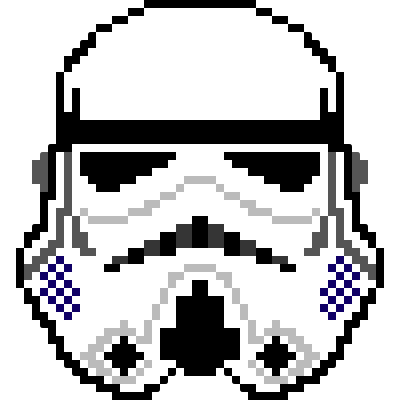

General Settings
Go to original repo's issue list after cloning
Create tab for cloned issue
Copy comments when cloning issue
Disable Kamino automatic comments on original issue
Prevent references to cloned issue on original issue (using
this hacky method
)
Save
Donate if you like this extension!